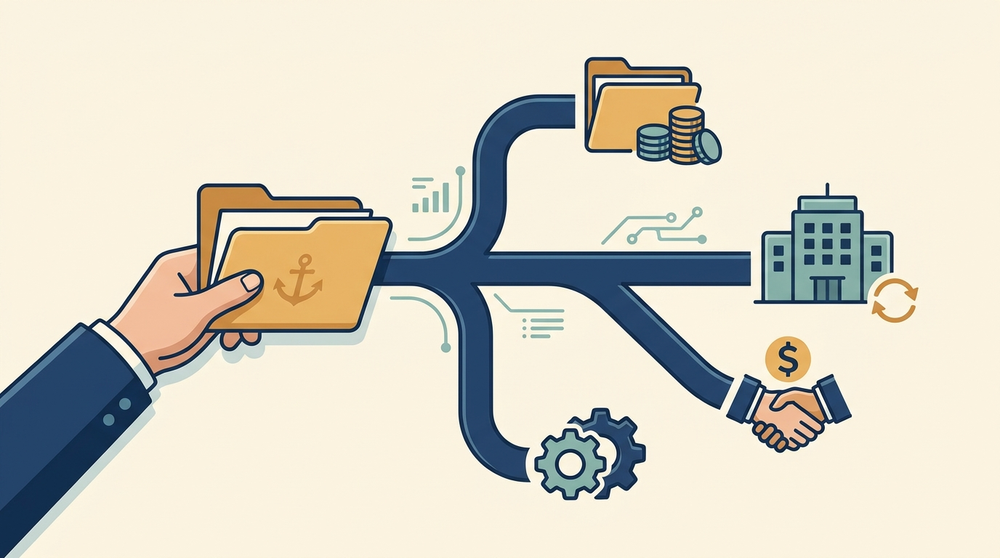

Part IV — COMMIT: Turn Expectations Into Work You Can Deliver
Manage Funding Delays: Revise the Cash Plan and Commitments

Image generated by Google Gemini (gemini-3-pro-image-preview)
Part IV — COMMIT: Turn Expectations Into Work You Can Deliver

Image generated by Google Gemini (gemini-3-pro-image-preview)